Inspriration:
I was looking for sleek websites that are easy to navigate and interesting to look at. I enjoy more sleek looking websites as they feel professional to me, and that is something I enjoy looking at and making. I looked at A LOT of websites, but these were the highlights for me:
https://gael-baurens.fr/
I really like the colour palette of this one. I also really like the way things slide in as you scroll down to look at the rest of the page.
https://gerlogu.com/
I like how alive this website feels. Everywhere you look, every time you scroll and everywhere you hover your mouse, something reacts.
https://www.jackbromhead.com/
This one also caught my eye with the colour palette. I, however, do not like that the navigation on the top only takes you to a different place on the same page.
https://heathsmith.net/
This one I like because of the sleekness, and because of the colour palette, however, it is not as reactive as I would like. I would like there to be more reaction as I scroll or hover my mouse. It is also quite busy on a lot of the pages.
Page Block Outs
Here I started to plan out what the website would look like in coloured blocks to showcase what I said above alittle more clearly.


 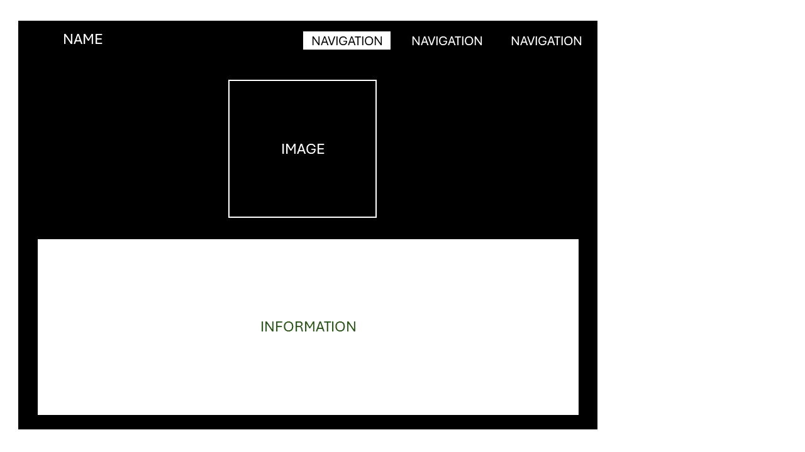
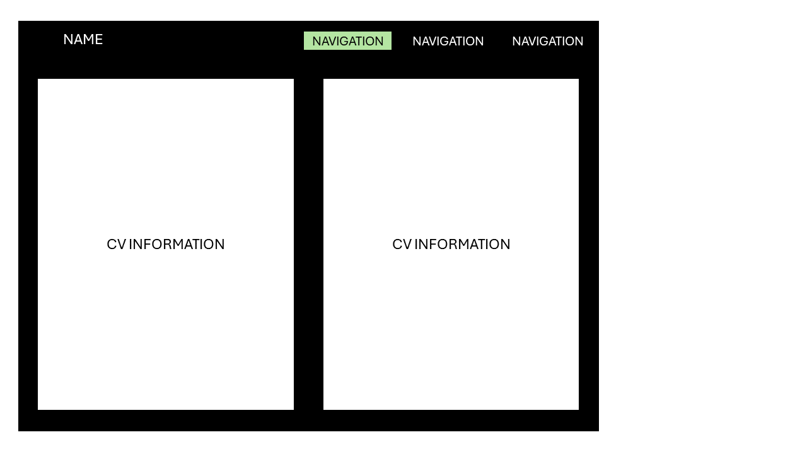
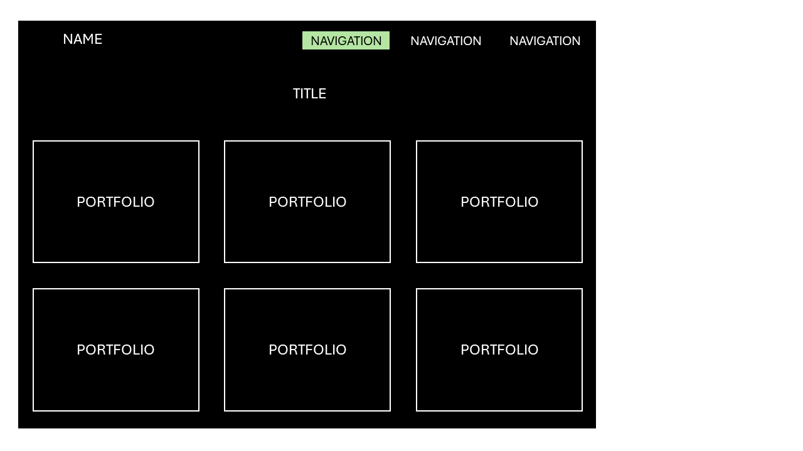
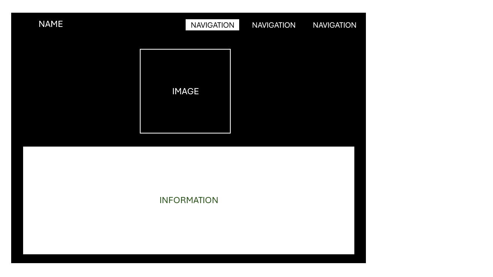
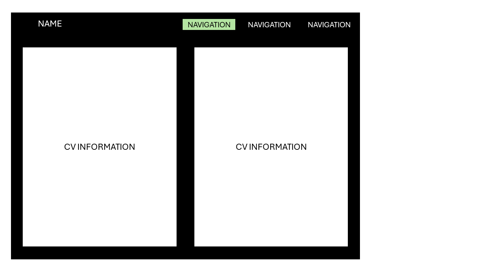
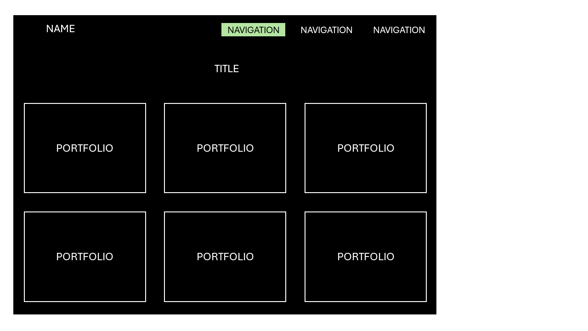
 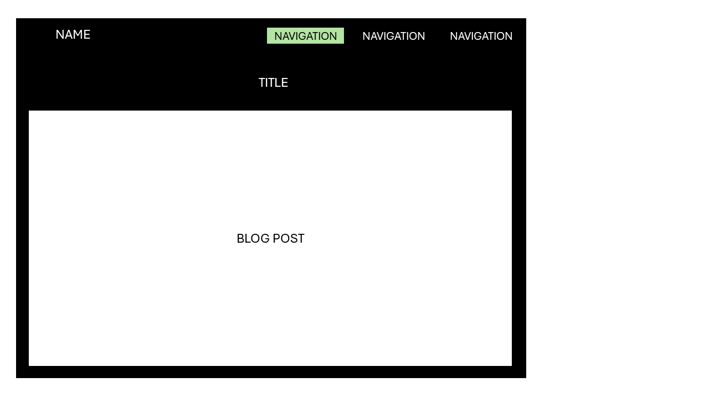
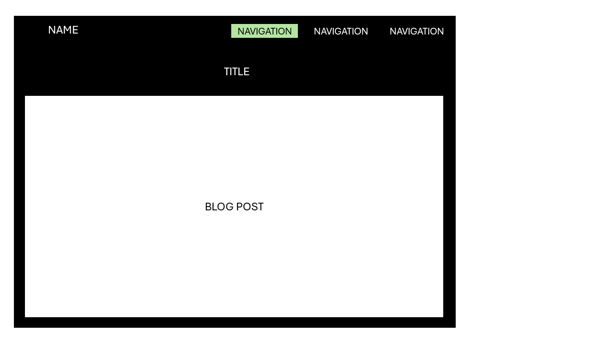

 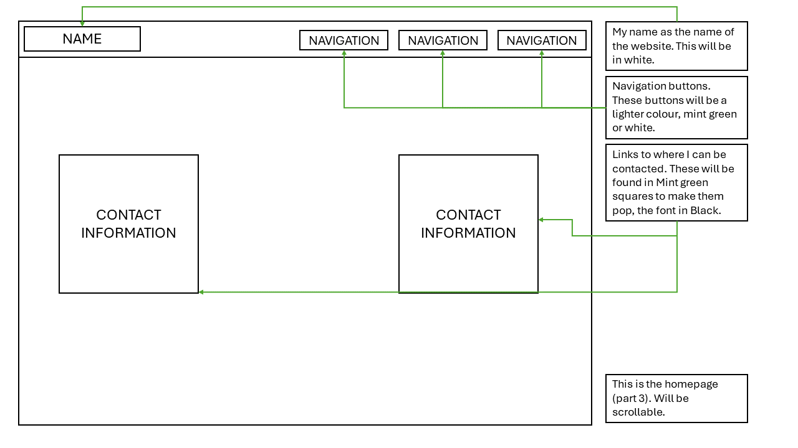
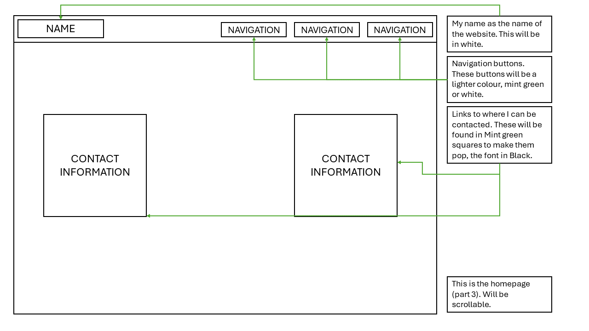

 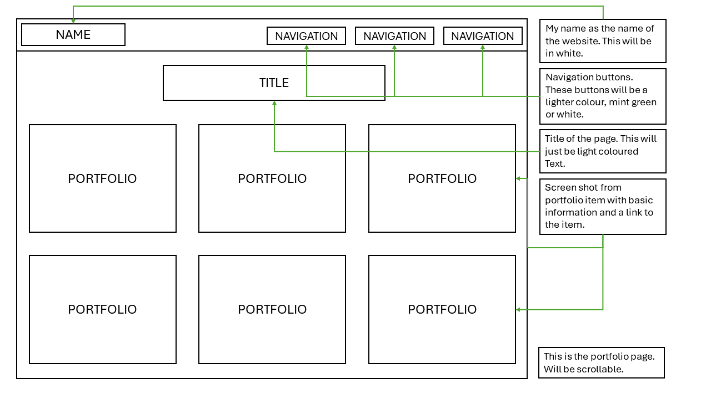
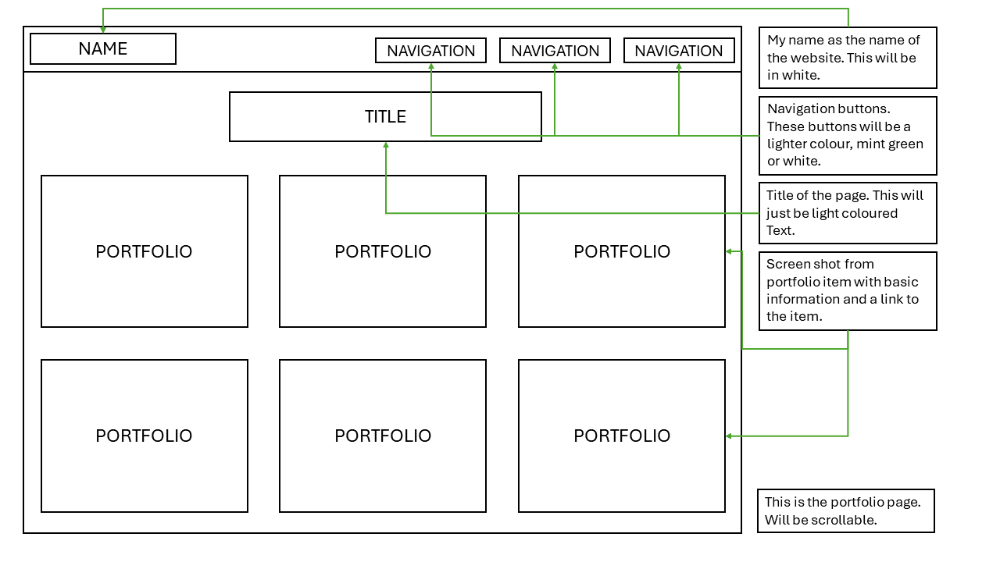